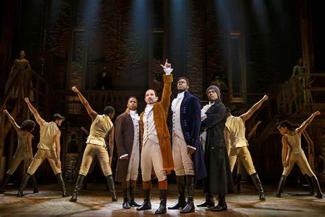
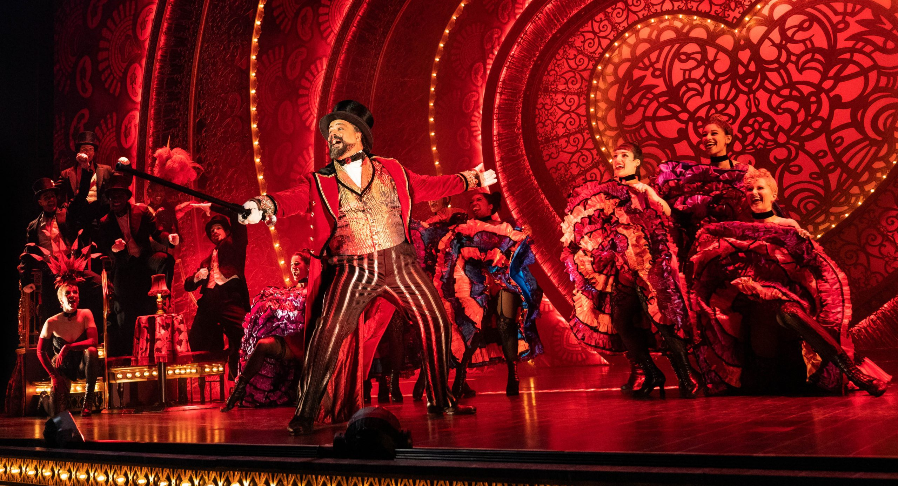

Hamilton fue de los primeros musicales de Broadway que conocí, es de mis favoritos porque musicalmente hablando tiene muchos'secretos', además de que cuenta una historia muy profunda, aliviándola con toques de comedia.

Es también de mis favoritos porque me gustan mucho los vestuarios, el maquillaje y la época en la que se sitúa. La intro será mi favorita por siempre.